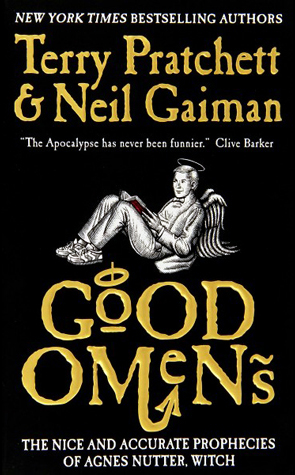

Good Omens
⭐️⭐️⭐️
I had to immediately reread (re-listen to) this book after finishing it the first time, because it's so... British-humor. Is that a thing? You know what I mean. Had I read this earlier in my life (along with The Hitchhiker's Guide books), I likely would have been much more sucked in. That said, I enjoyed the book. I liked the moral of the story. And I really liked the four additional horsemen of the apocalypse. And the relationship between Aziraphale and Crowley. I'm obviously not _that_ into off-the-wall silliness, though it's done completely tongue-in-cheek, and completely within reason.
- Previously: Arcanum Unbounded
- Next: The Girl Who Drank the Moon